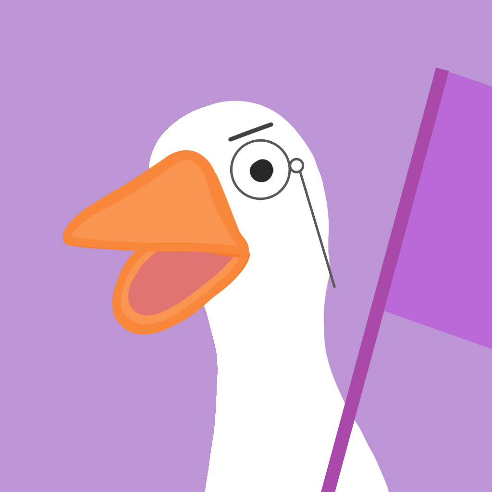

Stalker Goose
Este es el trabajo de Fin de Grado de Beatriz María Beltrán Álvarez.
Puedes encontrar la última información pública para un usuario utilizando Twitter e Instagram
Correo electrónico de contacto: beatrizmariabeltranalvarez@gmail.com